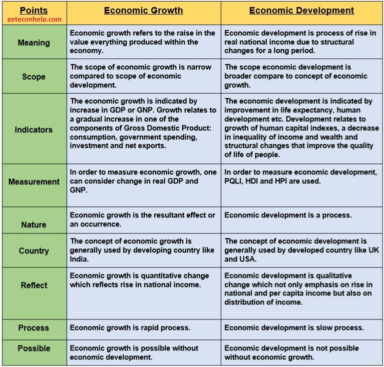

Since 1971, Bhutan has rejected GDP as the only way to measure progress—in its place, it has championed a new approach to development, which measures prosperity through formal principles of gross national happiness (GNH) and the spiritual, physical, social and environmental health of its citizens and natural environment.
Introduction
With greater dependence on the idea of the ‘economic man’, the world created immense wealth in the post-War decades. It was in the 1980s that social scientists started finer studies in the area of mankind’s actions, finally challenging the very idea of the ‘economic man’ (‘rational man’). By now, courtesy the UNO, the world has the World Happiness Report.
Progress
Progress is used by experts to denote betterment or improvement in anything. It shows the positive movement in the lives of people and in an economy. It had both quantitative and qualitative aspects to it. The term ‘progress’ became a general term with no specific meaning in economics or denoting both growth and development.
Economic Growth
An increase in economic variables like income over a period of time is economic growth. The most important aspect of growth is its quantifiability, i.e., one can measure it in absolute terms. for example, The growth of road network in an economy might be measured for a decade or any period in miles or kilometres.
economic growth is a quantitative progress.
To calculate the growth rate of an economic variable the difference between the concerned period is converted into percentage form.
Growth rate is an annual concept which may be used otherwise with the clear reference to the period for which it is used. Though growth is a value neutral term, i.e., it might be positive or negative for an economy for a specific period.
Economic growth is used for national level economic analyses, policymaking and also for study of comparative economics.
Economic Development
It was believed that once an economy is able to increase its production, its income will also increase and there will be an automatic betterment (quality increase) in the lives of the people of the economy.
For economists, development indicates the quality of life in the economy, which might be seen in accordance with the availability of many variables such as:
- The level of nutrition
- The expansion and reach of healthcare facilities—hospitals, medicines, safe drinking water, vaccination, sanitation, etc.
- The level of education
- Other variables on which the quality of life depends
If people are to be guaranteed with a basic minimum level of quality-enhancing inputs (such as food, health, education, etc.) in their life, a minimum level of income has to be guaranteed for them. Income is generated from productive activities. It means that before assuring development we need to assure growth. Higher.
Higher economic development requires higher economic growth. But it does not mean that a higher economic growth automatically brings in higher economic development. Without a conscious public policy, development has not been possible anywhere in the world. Similarly, we can say, that without growth there cannot be development either.
economic development is quantitative as well as qualitative progress.
If economic growth is suitably used for development, it comes back to accelerate the growth and ultimately greater and greater population brought under the arena of development. Similarly, high growth with low development and ill-cared development finally results in fall in growth.

Measuring Development
The idea of developing a formula/method to measure the development was basically facing two kinds of difficulties:
- At one level it was difficult to define as to what constitutes development. Factors which could show development might be many, such as levels of income/ consumption, quality of consumption, healthcare, nutrition, etc. It has been a realty difficult task to achieve consensus among the experts on these determinants of development.
- At the second level it looked highly difficult to quantify a concept as development constitutes quantitative as well as qualitative aspects. It is easy to compare qualitative aspects such as beauty, taste, etc., but to measure them we don’t have any measuring scale.
Human Development Index
In 1990, United Nations Development Programme (UNDP) published its first Human Development Report (HDR) which had a human development index (HDI) which was the first attempt to define and measure the level of development of economies.
The HDR measures development by combining three indicators— Health, Education and Standard of Living —converted into a composite human development index, the HDI.
The HDI sets a minimum and a maximum for each dimension, called goalposts, and then shows where each country stands in relation to these goalposts, expressed as a value between 0 and 1 (i.e., the index is prepared on the scale of one).
Education Index
It is (since HDR-2010) measured by two other indicators
- Mean of years of schooling (for adults aged 25 years): This is estimated based on educational attainment data from censuses and surveys available in the UNESCO Institute for Statistics database and Barro and Lee (2010) methodology.
- Expected years of schooling (for children of school entering age): These estimates are based on enrolment by age at all levels of education and population of official school age for each level of education. Expected years of schooling is capped at 18 years.
The education index is the geometric mean of two indices.
Health Index
It is measured by the life expectancy at birth component of the HDI and is calculated using a minimum value of 20 years and maximum value of 83.57 years. for example, if country \(x\) has life expectancy 55 years then health index will be \((55-20)/(83.57-20) = 0.55057417\)
Standard of Living
It is measured by GNI (Gross National Income/ Product) per capita at ‘Purchasing Power Parity in US Dollars’ (PPP $) instead of GDP per capita (PPP $) of past. The goalpost taken for minimum income is $100 (PPP) and the maximum is US $87,478 (PPP), estimated for Qatar in 2012. The HDI uses the logarithm of income, to reflect the diminishing importance of income with increasing GNI.
The scores for the three HDI dimension indices are then aggregated into a composite index using geometric mean.
The Debate on Human Development Continues
By 1995, economies around the world had officially accepted the concept of human development propounded by the UNDP. It is used by World Bank since the 1990s to quantify the developmental efforts of the member countries and cheap developmental funds were allocated in accordance.
For many years, experts and scholars came up with their own versions of defining development. They gave unequal weightage to the determinants defining development, as well as selected some completely different parameters. Most of such attempts were not prescriptions for an alternative development index, but they were basically trying to show the incompleteness of the HDI, via intellectual satires. In 1999, Bangladesh was the most developed country in the world with the USA, Norway, Sweden getting the lowest ranks in the index.
HDI which calculates the development of economies on certain parameters might be overlooking many other important factors such as
- cultural aspects of the economy,
- outlook towards aesthetics and purity of the environment
- aspects related to the rule and administration in the economy
- people’s idea of happiness and prestige
- ethical dimension of human life, etc.
Introspecting Development
Most of studies concluded that life in the developed world is anything but happy. Crime, corruption, burglaries, extortion, drug trafficking, flesh trade, rape, homicide, moral degradation, sexual perversion, etc.—all kinds of the so-called vices—were thriving in the developed world. It means development had failed to deliver them happiness, peace of mind, a general well- being and a feeling of being in good state.
Social scientists, somehow have been using terms such as progress, growth, development, well-being, welfare as synonyms of ‘happiness’. Happiness is a normative concept as well as a state of mind. Therefore, its idea might vary from one economy to the other.
Gross National Happiness
Bhutan has been following the GNH since 1972 which has the following parameters to attain happiness/ development:
- Higher real per capita income
- Good governance
- Environmental protection
- Cultural promotion (i.e., inculcation of ethical and spiritual values in life without which, it says, progress may become a curse rather than a blessing)
An impartial analysis sufficiently suggests that material achievements are unable to deliver us happiness devoid of some ethics at its base. And ethics are rooted in the religious and spiritual texts. But the new world is guided by its own scientific and secular interpretation of life and the world has always been suspicious about recognising the spiritual factor in human life.
Happiness
Sustainable Development Solution Network (a UN body) publishes World Happiness report which measures happiness and well-being of the nations to help guide public policy on the basis of the following six parameters:
- GDP per capita (at PPP)
- Social support (someone to count on)
- Healthy life expectancy at birth
- Freedom to make life choices
- Generosity
- Perception of corruption
Major highlights of the WHR 2018 are as given below:
- Finland is happiest while Burundi is the unhappiest country on the planet.
- India is ranked 133rd in 156 nations while Pakistan at 75th.
- Finland has got several accolades from the report as—the most stable, the safest and best governed country in the world together with being the least corrupt and the most socially progressive and the happiest immigrants. Its police are the world’s most trusted and its banks the soundest.
- As per the report, USA(18) its happiness is being systematically undermined by three inter-related epidemic diseases—obesity, substance abuse (especially opioid addiction) and depression.
- The greatest human migration in history—the hundreds of millions of people who have moved from the Chinese countryside into cities—has not advanced happiness at all.
The Meaning of Happiness
Happiness is an aspiration of every human being, and can also be a measure of social progress. Yet,
happiness is used in at least two ways :
- As an emotion [‘Were you happy yesterday?’], and
- As an evaluation [‘Are you happy with your life as a whole?’].
WHRs did show that the respondents of the surveys clearly recognise the difference between happiness as an emotion and happiness in the sense of life satisfaction.
Trends in Happiness
The report presents data for the world showing the levels, explanations, changes and equality of happiness. The world has become a slightly happier and more generous place over the past five years, despite the obvious detrimental happiness impacts of the financial crisis (2007– 08), as per the report.
The HDR Linkage
The WHR 2013 investigated the conceptual and empirical relationships between ‘human development’ (the UNDP idea used in the Human Development Report) and ‘life evaluation’ approaches to understanding human progress. It argues that both approaches were, at least in part, motivated by a desire to consider progress and development in ways that went beyond the mere comparison of GDPs, and to put people at the centre.
The Background
In July 2011 the UN General Assembly passed a historic resolution. It invited member countries to measure the happiness of their people and to use this to help guide their public policies. On April 2012 by the first UN high-level meeting on happiness and well-being, chaired by the Prime Minister of Bhutan. At the same time the first World Happiness Report was published.
Re-imagining idea of Happiness
To understand the ‘shift’ which is expected to take place among policymakers around the world in coming years, it will be better to lift some ideas from the first WHR:
-
This is an age of stark contradictions. While at the one hand the world enjoys technologies of unimaginable sophistication, at the other hand, at least one billion people are living without enough to eat. yet it is relentlessly destroying the natural environment in the process.
-
self-reported happiness of the citizenry with the following serious ‘concerns’ of today (WHR 2012):
- uncertainties and anxieties are high
- social and economic inequalities have widened considerably
- social trust is in decline
- confidence in government is at an all- time low
-
If we continue mindlessly along the current economic trajectory, we risk undermining the Earth’s life support systems—food supplies, clean water and stable climate—necessary for human health and even survival in some places.
-
In an impoverished society, the urge for material gain typically makes a lot of sense. Higher household income (or higher per capita GNP) generally signifies an improvement in the life conditions of the poor.
-
Higher average incomes do not necessarily improve average well-being, GNP per capita of USA has risen by a factor of three since 1960, while measures of average happiness have remained essentially unchanged over the half-century.
Society did not become happier as it became richer. This is due to four reasons:
- Individuals compare themselves to others. They are happier when they are higher on the social (or income) ladder. Yet when everybody rises together, relative status remains unchanged.
- The gains have not been evenly shared
- insecurity, loss of social trust, declining confidence in government
- Individuals may experience an initial jump in happiness when their income rises, but then at least partly return to earlier levels as they adapt to their new higher income
-
higher income may raise happiness to some extent, the quest for higher income may actually reduce one’s happiness. Psychologists have found repeatedly that individuals who put a high premium on higher incomes generally are less happy and more vulnerable to other psychological ills than individuals who do not crave higher incomes.
-
The thinking of becoming happier by becoming richer is challenged by the law of diminishing marginal utility of income — after a certain point, the gains are very small. This means that poor people benefit far more than rich people from an added dollar of income.
Suppose that a poor household at Rs. 1,000 income requires an extra Rs. 100 to raise its life satisfaction level (or happiness) by one notch. A rich household at Rs. 1,000,000 income (one thousand times as much as the poor household) would need one thousand times more money, or Rs. 100,000, to raise its well-being by the same one notch. Gains
At the End
Yet most people probably believe that happiness is in the eye of the beholder, an individual’s choice, something to be pursued individually rather than as a matter of national policy. Happiness seems far too subjective, too vague, to serve as a touchstone for a nation’s goals, much less its policy content. That indeed has been the traditional view.
The WHR 2012 summarises the fascinating and emerging story of these studies on two broad measurements of happiness:
- the ups and downs of daily emotions and
- an individual’s overall evaluation of life
The former is sometimes called ‘affective happiness,’ and the latter ‘evaluative happiness’.
Affective happiness captures the day-to-day joy of friendship, time with family and sex, or the downsides of long work commutes and sessions with one’s boss. Evaluative happiness measures very different dimensions of life, those that lead to overall satisfaction or frustration with one’s place in society.
A household’s income counts for life satisfaction,but only in a limited way—other things matter more:
- community trust,
- mental and physical health, and
- the quality of governance and rule of law.
‘happiness traps’ such as in the USA in recent decades, where GNP may rise relentlessly while life satisfaction stagnates or even declines.
Insights into Human Behaviour
The World Bank in its latest report (World Development Report 2015: Mind, Society, and Behaviour) said that development policies become more effective when combined with insights into human behaviour. It further adds that policy decisions informed by behavioural economics can deliver impressive improvements in promoting development and well-being in society.
Social norms, culture and development
Economic development is not only dependent on fiscal policy, monetary policy and taxation, but is also rooted in human psychology, sociology, culture and norms. The recent World Development Report (WDR) of 2015 focuses on the behavioural and social foundations of development, and has been very well received.
Values of Economics
There is research in psychology and evolutionary biology which shows that morality, altruism, and other-regarding values are an innate part of the human mind, even though the social setting in which a person lives can nurture or stunt these traits. Recent research shows that having a few ‘good’ human beings in society can give rise to dynamics through which we end up with an overall better society.
In talking about a nation’s economic progress, all attention, including both praise and criticism, is usually focused on the government. It is, however, important to recognise that much also depends on civil society, the firms, the farmers and ordinary citizens. The social norms and collective beliefs that shape the behaviour of these agents play an important role in how a nation performs.